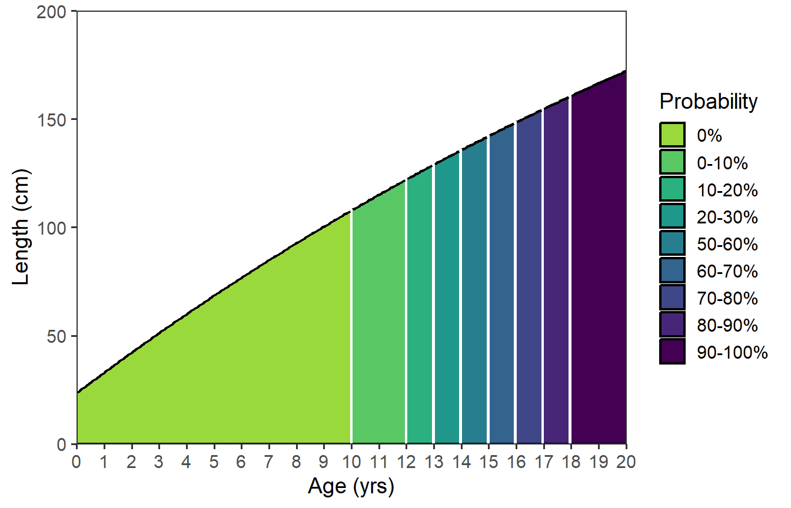

library(tidyverse) # for dplyr, ggplot2 packagesIntroduction
Ulaski et al. (2022) modeled the White Sturgeon (Acipenser transmontanus) population in the Sacramento-San Joaquin River Basin to suggest management goals for the population. Their Figure 1 showed a modeled von Bertalanffy growth function with shading below the curve that indicated the probability of being mature for each modeled age. I had not seen a plot like this before and set out to recreate it with ggplot2.
This exercise turned out to be more challenging than I thought and I ultimately reached out to Marta Ulaski, the lead author on the paper, to see if their solution was different or “easier” than mine. It was different but I learned something with both methods; thus, I will present both here.1
1 I modified the specifics but kept the overall concept of Ulaski’s approach.
Getting Setup
The following packages are loaded for use below.
The ggplot2 theme was set to theme_bw() but with a larger base font size and gridlines removed.
theme_set(
theme_bw(base_size=14) +
theme(panel.grid=element_blank())
)
Growth Function
The three parameters (\(L_{\infty}\), \(K\), and \(t_{0}\)) of a “typical” von Bertalanffy growth function (VBGF) provided in the caption to Figure 1 of Ulaski et al. (2022) were entered into the vbpar named vector.
vbpar <- c("Linf"=380,"K"=0.027,"to"=-2.36)vbFuns() from FSA was used to create a function that returns the mean length-at-age given a set of ages and “typical” VBGF parameters.
vb <- FSA::vbFuns('Typical')
vb#R| function (t, Linf, K = NULL, t0 = NULL)
#R| {
#R| if (length(Linf) == 3) {
#R| K <- Linf[[2]]
#R| t0 <- Linf[[3]]
#R| Linf <- Linf[[1]]
#R| }
#R| Linf * (1 - exp(-K * (t - t0)))
#R| }
#R| <bytecode: 0x000001ff91391a10>
#R| <environment: 0x000001ff913cd1e0>While this function appears overly complicated, an advantage of this function is that all three parameters of the typical VBGF can be given to the Linf= argument.
Below is an illustrative example for computing the mean length-at-age given the parameters in vbpar for ages 10 and 15.
vb(c(10,15),Linf=vbpar)#R| [1] 107.8234 142.1949vb() will be used in both approaches to making Figure 1 below.
Maturity Data
Ulaski et al. (2022) provided probabilities of being mature by age in their Table 1. Here I entered those data directly into a data frame, though I multiplied the probabilities by 100 as that is how they are presented in Figure 1. I also added a much older age of 50 to illustrate how this process could be extended to older ages than what was shown in their Figure 1.
dfmat <- data.frame(age=c(0,10:20,50),
prmat=c(0,0.025,0.086,0.143,0.291,0.543,
0.622,0.788,0.849,0.942,0.966,1,1)*100)
dfmat#R| age prmat
#R| 1 0 0.0
#R| 2 10 2.5
#R| 3 11 8.6
#R| 4 12 14.3
#R| 5 13 29.1
#R| 6 14 54.3
#R| 7 15 62.2
#R| 8 16 78.8
#R| 9 17 84.9
#R| 10 18 94.2
#R| 11 19 96.6
#R| 12 20 100.0
#R| 13 50 100.0The probabilities presented in Figure 1 have been binned into categories. The first category is simply 0% (none mature), but each category after that has a width of 10%. Thus, the next two categories would be from 0.1 to 10%, and 10.1 to 20%. Ulaski et al. (2022) chose to label these two categories as “0-10%” and “10-20%”, respectively.
These categories may be created with cut(), which takes the data to categorize as its first argument, the values at which to “cut” the categories in breaks=, and labels for the categories in labels=. It is important to note that cut() makes categories right-inclusive by default. Thus, if the breaks are c(0,10,20) then the first category would be from 0 to 10, with 10 being inclusive. Thus, a value of 9 or 10 would be included in this category, but 0 would not. Thus, to have a category for just the 0 values, the breaks must start at some negative number (in this case, negative infinity was used).2 The results of cut() were added to the prcuts variable in dfmat.3
2 seq(0,100,10) creates a sequence from 0 to 100 in steps of 10.
3 Because using mutate().
dfmat <- dfmat |>
mutate(prcuts=cut(prmat,
breaks=c(-Inf,seq(0,100,10)),
labels=c("0%","0-10%","10-20%","20-30%","30-40%","40-50%",
"50-60%","60-70%","70-80%","80-90%","90-100%")))
dfmat#R| age prmat prcuts
#R| 1 0 0.0 0%
#R| 2 10 2.5 0-10%
#R| 3 11 8.6 0-10%
#R| 4 12 14.3 10-20%
#R| 5 13 29.1 20-30%
#R| 6 14 54.3 50-60%
#R| 7 15 62.2 60-70%
#R| 8 16 78.8 70-80%
#R| 9 17 84.9 80-90%
#R| 10 18 94.2 90-100%
#R| 11 19 96.6 90-100%
#R| 12 20 100.0 90-100%
#R| 13 50 100.0 90-100%dfmat will be used in both approaches to making Figure 1 below.
Define Repetitive Values
For simplicity, some values that will be used in both approaches were assigned to objects that can be reused.
# x-axis (age) title, limits, labels
agettl <- "Age (yrs)"
agelmts <- c(0,20)
agelbls <- 0:20
# y-axis (length) title, limits, labels
lenttl <- "Length (cm)"
lenlmts <- c(0,200)
lenlbls <- seq(0,200,50)
# fill color (probability mature) title
probttl <- "Probability"
My Recreation of Figure 1
Plotting the von B function
The typical VBGF can be plotted over the range of ages in a data frame with stat_function().4 The function to be evaluated (i.e., vb()) is given in fun= and any arguments that it requires are given in a list to args=.5 The smoothness of the curve can be controlled with n=, which is the number of ages over the range of ages for which the function will be evaluated.6 Finally, I increased the line width slightly.
4 Make sure to map the age variable to the x aesthetic.
5 Here we can set vbpar to just Linf given that all parameters can be given to this one argument as shown above.
6 n= defaults to 101, which appeared adequate for these data, though I increased it here to demonstrate its use.
ggplot(data=dfmat,mapping=aes(x=age)) +
scale_x_continuous(name=agettl,limits=agelmts,breaks=agelbls,
expand=expansion(mult=0)) +
scale_y_continuous(name=lenttl,limits=lenlmts,breaks=lenlbls,
expand=expansion(mult=0)) +
stat_function(fun=vb,args=list(Linf=vbpar),
n=202,linewidth=0.75)As seen above, stat_function() defaults to drawing a line of the function (i.e., it uses geom_line()). However, other geoms can be used; e.g., geom="area".7
7 I used fill= here to show the effect, but this also required setting color= because the color for the line took on the fill color.
ggplot(data=data.frame(age=c(0,20)),mapping=aes(x=age)) +
scale_x_continuous(name=agettl,limits=agelmts,breaks=agelbls,
expand=expansion(mult=0)) +
scale_y_continuous(name=lenttl,limits=lenlmts,breaks=lenlbls,
expand=expansion(mult=0)) +
stat_function(fun=vb,args=list(Linf=vbpar),
n=202,linewidth=0.75,
geom="area",fill="salmon",color="black")
Adding the Maturity Scale
My solutions to recreating Figure 1 of Ulaski et al. (2022) generally followed the StackOverflow answer at the bottom of this question. This process uses after_stat() and after_scale(), which were introduced to ggplot2 in v3.3.0.8 I don’t yet fully understand these two functions, but will try to explain what I think they are doing.
8 See their introduction here.
As illustrated above, stat_function() produces a smooth curve by creating n= values of x over the range of the variable mapped to the x= aesthetic. One part of the “trick” to this solution is to first realize that these “age” values created by stat_function() are not integers and, thus, they need to be “cut” into integer age categories. The second part of the “trick” to this solution is that the probability of maturity category labels should be used for the “cuts” of age rather than labels of age. For example, an age of 13.5 created by stat_function() should be categorized as an age of 13 but labeled with “20-30%”.9 This cutting of the age values comes after they have been created by stat_function() in the x= aesthetic and are thus accessed by after_stat(x) which I pipe into cut() and set equal to the fill= aesthetic in stat_function().
9 Examine dfmat to see why.
The third part of the “trick” to this solution is to realize that the different colored areas can only be plotted if the group= aesthetic is set to the same categories used in the fill= aesthetic. As the fill= aesthetic was just created and is defined in a scale (see scale_fill_viridis_d() below), the group= aesthetic must be defined with after_scale(fill).
ggplot(data=dfmat,mapping=aes(x=age)) +
scale_x_continuous(name=agettl,limits=agelmts,breaks=agelbls,
expand=expansion(mult=0)) +
scale_y_continuous(name=lenttl,limits=lenlmts,breaks=lenlbls,
expand=expansion(mult=0)) +
stat_function(mapping=aes(fill=after_stat(x) |>
cut(breaks=!!dfmat$age,
labels=!!dfmat$prcuts[-nrow(dfmat)],
include.lowest=TRUE),
group=after_scale(fill)),
fun=vb,args=list(Linf=vbpar),n=202,
geom="area",color="black",linewidth=0.75)This, obviously, is not ideal … largely due to the long name for the legend. However, it is also not the colors used in Figure 1 of Ulaski et al. (2022). A custom viridis-based color scheme was used in Ulaski et al. (2022),10 which can be used with scale_fill_viridis_d().
10 I would not have “discovered” this color scheme on my own. This came from seeing Ulaski’s original code.
ggplot(data=dfmat,mapping=aes(x=age)) +
scale_x_continuous(name=agettl,limits=agelmts,breaks=agelbls,
expand=expansion(mult=0)) +
scale_y_continuous(name=lenttl,limits=lenlmts,breaks=lenlbls,
expand=expansion(mult=0)) +
stat_function(mapping=aes(fill=after_stat(x) |>
cut(breaks=!!dfmat$age,
labels=!!dfmat$prcuts[-nrow(dfmat)],
include.lowest=TRUE),
group=after_scale(fill)),
fun=vb,args=list(Linf=vbpar),n=202,
geom="area",color="black",linewidth=0.75) +
scale_fill_viridis_d(name=probttl,begin=0.85,end=0)
Finally, there are two things with this plot that I don’t like. First, the black line for the growth function appears broken at the color breaks. Second, the linewidth around the colors in the legend is too thick. To correct these issues, I removed linewidth= and color= from stat_function() and then added a second stat_function() that plots just the growth function as a line.11 This second use of stat_function() lays the function line on top of the function “area.”
11 See the first use of stat_function() further above for how this was done.
ggplot(data=dfmat,mapping=aes(x=age)) +
scale_x_continuous(name=agettl,limits=agelmts,breaks=agelbls,
expand=expansion(mult=0)) +
scale_y_continuous(name=lenttl,limits=lenlmts,breaks=lenlbls,
expand=expansion(mult=0)) +
stat_function(mapping=aes(fill=after_stat(x) |>
cut(breaks=!!dfmat$age,
labels=!!dfmat$prcuts[-nrow(dfmat)],
include.lowest=TRUE),
group=after_scale(fill)),
fun=vb,args=list(Linf=vbpar),n=202,
geom="area") +
scale_fill_viridis_d(name=probttl,begin=0.85,end=0) +
stat_function(fun=vb,args=list(Linf=vbpar),n=202,
color="black",linewidth=0.75)
Future Updates?
I may update this post as I learn more about after_stat() and after_scale().
Further Thoughts
There are a few things that I would like to see different in this figure. First, the “white” lines between the colors are too prominent. The size of these lines are a function of the number of “fractional” ages used to produce the plot. Thus, to make these “lines” thinner one could increase n= in my solution or decrease by= in the author’s solution.
Second, it bothers me that the colors for the probabilities seem equally spaced even though two categories are not represented in the data (e.g., 30-40% and 40-50%). In my mind, there should be a “jump” in colors at the ages where the probability jumps from 20-30% to 50-60% (i.e., between age-13 and age-14).15 I could not address this issue with my solution, but including drop=FALSE in scale_fill_viridis_d() fixed this in the author’s solution.
15 This will be a common issue with maturity data as the probability of maturity often increases dramatically over a short range of lengths and, thus, one or very few ages.
Third, the “line” does not look like a typical VBGF to me as these sturgeon are long-lived and grow so slowly that very little curvature and no asymptote is evident. In some situations is may be useful to extend the x-axis to older ages to better “see” the typical asymptotic growth of the VBGF.16
16 This is not that useful here given the shape of the VBGF for this species.
Finally, the authors started their plot age-1. I am not sure why they did this, but that can be accomplished by filtering the data to only age-1 and older.
All of these changes (with by=0.01 and extending the ages to 30) were made below using the author’s solution.
agelmts <- c(0,30) # changed max
agelbls <- seq(0,30,2) # changed max, made sequence by 2
lenlmts <- c(0,250) # changed max
lenlbls <- seq(0,250,50) # changed max
by <- 0.01 # made smaller
agef <- seq_prs(dfmat$age,by)
repinds <- rep(1:nrow(dfmat),c(diff(dfmat$age)/by,1))
dfmat3 <- dfmat[repinds,] |> # changed name to dfmat3
mutate(agef=agef,
len=vb(agef,Linf=vbpar)) |>
filter(agef>=1) # filtered out <age-1
ggplot(data=dfmat3,mapping=aes(x=agef,y=len)) + # used new dfmat3
geom_area(mapping=aes(fill=prcuts)) +
geom_line(linewidth=0.75) +
scale_x_continuous(name=agettl,limits=agelmts,breaks=agelbls,
expand=expansion(mult=0)) +
scale_y_continuous(name=lenttl,limits=lenlmts,breaks=lenlbls,
expand=expansion(mult=0)) +
scale_fill_viridis_d(name="Probability",begin=0.85,end=0,drop=FALSE)
References
Ulaski, M. E., S. E. Blackburn, Z. J. Jackson, and M. C. Quist. 2022. Management goals for conserving White Sturgeon in the Sacramento–San Joaquin River Basin. Journal of Fish and Wildlife Management 13(2):334–343.
Reuse
Citation
BibTeX citation:
@misc{h.ogle2023,
author = {Derek H. Ogle},
title = {Ulaski Et Al. (2022) {Growth-Maturity} {Figure}},
date = {2023-02-16},
url = {https://fishr-core-team.github.io/fishR//blog/posts/2023-3-16_Ulaskietal_GrowthMortFig},
langid = {en}
}
For attribution, please cite this work as:
Derek H. Ogle. 2023, February 16. Ulaski
et al. (2022) Growth-Maturity Figure.